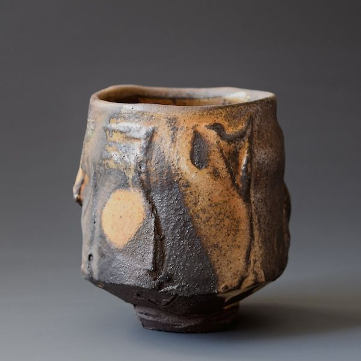

Raku - керамическая чашка для чая, занимает в японской культуре примерно то же место, что и фарфор в европейской, это гордость хозяина, удовольствие от обладания, художественные и технологические качества чашки влияют на течение мыслей и эмоционалльное состояние участников чаепития. Тут надо заметить, что чаепитие - это отдельный ритуал, не связанные с утолением жажды или голода, перерыв в повседневных занятиях или завершение приема пищи. Чаепития и там и там дефрагментирует повседненвность, помогает взвесить произошедшие и ожидаемые события, соориентироваться в них, сглаживает эмоциональные колебания, сближает участников.
Сложно ли учить HTML? Возможно.
Но, если приложить некоторые усилия, то ничего сложного в этом нет.


pictures with the full link.

pictures with the relative link.